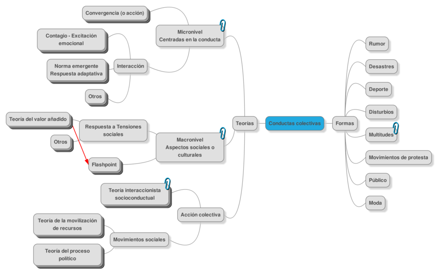
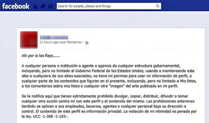
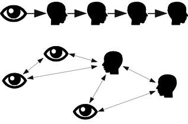
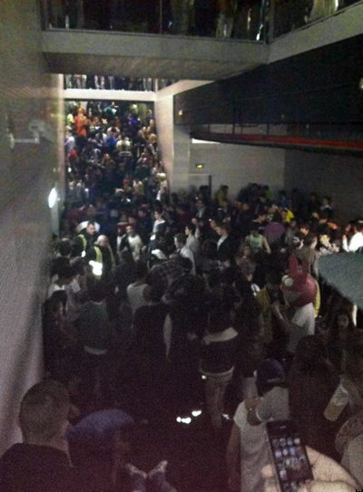
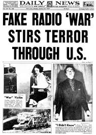
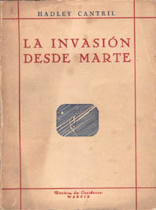

Fenómenos que caen fuera de la estructura social u orden establecido
[definimos] la conducta colectiva como una acción voluntaria, dirigida a una meta, que se produce en una situación relativamente desorganizada, en la que las normas y valores predominantes de la sociedad dejan de actuar sobre la conducta individual. La conducta colectiva consiste en la reacción de un grupo a alguna situación.
Appelbaum y Chambliss, 1997, p. 422
Son un fenómeno...
Colectivo
Unitario
Sin organización
Transitorio
Indiferenciado
Anómico
Mapa conceptual
Mapa conceptual
Movimientos sociales
Una colectividad que actúa con cierta continuidad para promover un cambio en la sociedad (o grupo) de la que forma parte.
Grauman, 1987
El difícil camino de la Psicología colectiva
Problemas de la Psicología colectiva
Individualización de la Psicología
Falta de métodos empíricos adecuados
"Sujetos" de poco interés para la ciencia
Campos de estudio
Rumores
Histeria colectiva
Deporte
Desastres
El rumor
Mensajero del error y del mal tanto como de la verdad, el rumor, la más rápida de todas las plagas, va desencadenando el terror y se fortifica difundiéndose.
Virgilio, La Eneida
El rumor
Leyendas urbanas
Allport y Postman
Formas de transmisióm
Desastres
Titanic
Madrid Arena
Histeria Colectiva
La Guerra de los Mundos
Cantril
Violencia en el deporte
Heysel Stadium Disaster (1985)
Violencia en el deporte
Egypt football disaster - Port Said
Violencia en el deporte
Deadly violence in Egypt after court issues death sentences for football hooligans
Juan Muñoz | Acción Pública y Cambio Social - Perspectivas de la acción colectiva

 Juan Muñoz | Acción Pública y Cambio Social - Perspectivas de la acción colectiva
Juan Muñoz | Acción Pública y Cambio Social - Perspectivas de la acción colectiva